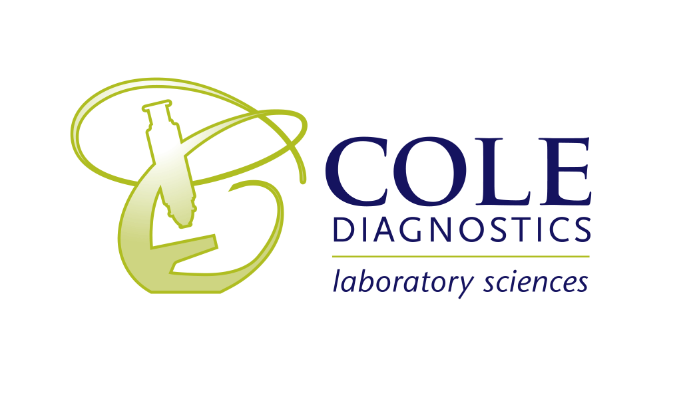

Get Paid Faster
LigoLab Offers a Faster and More Accurate Way for Medical Laboratories to Handle Client Billing
ANGELES, CA – August ???, 2022 – Client billing for clinical laboratories and pathology groups has traditionally included time-consuming, mostly manual processes that most often led to mistakes and delays in payment for services rendered. Up until the recent past, the only way to improve this problem area was to expand the billing department and hire more full-time equivalents (FTEs). This, however, represented a band-aid solution with incremental improvements, and it didn’t get to the root of the problem.
For lab operators on a growth trajectory and looking for a better and more efficient and cost-effective way to handle this important aspect of laboratory revenue cycle management (RCM), LigoLab offers its automated client billing software solution.
The LigoLab LIS & RCM Laboratory Operating Platform is a fully integrated software solution for growing labs. It features both LigoLab LIS and LigoLab RCM, two comprehensive and infinitely configurable modules that share a common database and software infrastructure. This ensures end-to-end data integrity and streamlined workflows that lead to improved efficiency, accelerated cash flow, and most importantly, increased margin and profit.
The Platform also features the Billing Encounter, the driving force behind LigoLab RCM that consolidates all relevant information, enabling data to seamlessly flow into real-time workflow queues while also providing user-defined filters and templates that allow for the configuration of rules and the strategic distribution of work with full audit trail visibility.
The Billing Encounter automates and quickly sorts out laboratory billing by the client, the payer, and the patient, turning what used to be a days-long process into one that’s completed in just seconds.
“We went from this very manual process of sorting through stacks of papers to being able to look at our laboratory information system (LIS) and immediately see what was client bill,” said Kelli Cole, Vice President at Cole Diagnostics, who estimated that about 20 percent of the lab’s business falls into the client category. “This automation streamlined the process for us.”
Cole also noted that faster sorting led to three other major benefits:
-
1. The lab was able to handle significantly more testing volume resulting from COVID-19 surges without greatly reshaping the billing department.
-
2. The lab experienced reduced time spent in accounts receivable (A/R) for client accounts.
-
3. The accuracy of the information received by the billing team sped up the review process, allowing the lab to invoice its clients faster.
Cole said the lab explored other options to improve client billing before identifying LigoLab as the most efficient option. She said it took about three months to get all of the lab’s clients set up and configured within the system, and credited LigoLab’s support team for being very responsive and helpful, providing regular check-ins.
“They're very attentive and very willing to answer questions and solve problems. They help us find better solutions every step of the way,” she said. “We appreciate the flexibility the system presents, and the ability to customize exactly what works for each one of our customers.”
To learn more about LigoLab and how its future-ready platform can transform clinical and pathology laboratories into information-driven, connected, and thriving businesses, visit LigoLab.
About Cole Diagnostics
Cole Diagnostics, founded in 2004, serves as a comprehensive, full reference laboratory specializing in pathology, cytology, molecular, microbiology, clinical chemistries, immunoassay, tissue staining, and more. Led by Dr. Ryan Cole (Chief Medical Officer and Laboratory Director), the fast-growing lab has invested in the latest and most effective technology, ensuring that cutting-edge science is at play to get the most accurate answers possible, thereby improving patient outcomes.

About LigoLab
LigoLab is an award-winning provider of innovative end-to-end healthcare software for pathology laboratories, servicing 150+ facilities nationwide. As a comprehensive enterprise-grade solution, the LigoLab LIS & RCM Laboratory Operating Platform™ includes modules for anatomic pathology, clinical pathology, molecular diagnostics, revenue cycle management(RCM), and direct-to-consumer, all on one powerful and integrated platform that supports every role, every department, and every case. LigoLab empowers laboratories to better serve patients, differentiate themselves in the marketplace, scale their operations and become more compliant, and more profitable.
LigoLab Webinar
Learn all about the secrets related to RCM success from the best!